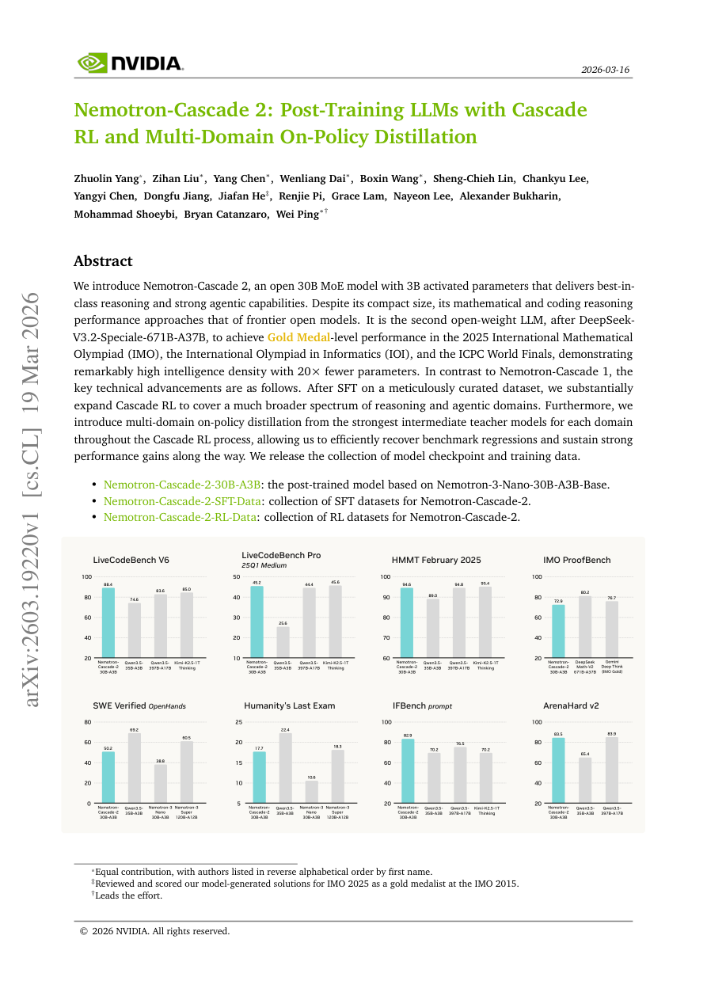

#1
★ 9/10
Nemotron-Cascade 2: Post-Training LLMs with Cascade RL and Multi-Domain On-Policy Distillation
Nemotron-Cascade 2：基于级联强化学习与多领域在线策略蒸馏的大语言模型后训练

图 Figure · Page 1 of paper
🎯 30B MoE模型以极低参数量达到IMO/IOI金牌级数学推理水平
A 30B MoE model achieves Olympic gold-medal math and coding performance with 20x fewer parameters than frontier models.
❓ Problem · 解决什么问题
训练一个既小巧又具备顶尖推理能力的语言模型极具挑战性。现有的大型前沿模型（如671B参数模型）虽然性能卓越，但部署成本极高。如何让一个只激活3B参数的小模型也能解决奥林匹克竞赛级别的数学和编程难题？
Training a compact language model that rivals much larger frontier models in complex reasoning is extremely difficult. Existing top-performing models require hundreds of billions of parameters, making deployment costly. The challenge is enabling a model with only 3B activated parameters to solve Olympic-level mathematics and programming competition problems.
⚙️ Method · 方法
本文提出了Nemotron-Cascade 2，首先在精心筛选的数据集上进行监督微调（SFT），然后大幅扩展了"级联强化学习（Cascade RL）"训练框架，覆盖更广泛的推理和智能体（Agentic）任务领域。核心创新在于引入了"多领域在线策略蒸馏"技术：在级联RL训练过程中，针对每个具体领域，动态选用该领域最强的中间教师模型进行蒸馏，从而及时修复训练中出现的性能退步问题，并持续推动各项能力的提升。模型和训练数据均已开源发布。
Nemotron-Cascade 2 first applies supervised fine-tuning (SFT) on a carefully curated dataset, then substantially expands the Cascade RL training framework to cover a much broader range of reasoning and agentic domains. The key innovation is multi-domain on-policy distillation: throughout the Cascade RL process, the strongest intermediate teacher model for each specific domain is used to distill knowledge on-policy, efficiently recovering benchmark regressions that arise during training and sustaining continuous performance gains. Both model checkpoints and training data are publicly released.
📊 Results · 结果
Nemotron-Cascade 2（30B MoE，仅激活3B参数）成为继DeepSeekV3.2-Special-671B-A37B之后，全球第二个在2025年国际数学奥林匹克（IMO）、国际信息学奥林匹克（IOI）以及ICPC世界总决赛中同时达到金牌级别表现的开源大语言模型。与671B参数的对比模型相比，Nemotron-Cascade 2实现了约20倍的参数效率提升，在数学和编程推理性能上接近当前最强的开源前沿模型水平，同时还具备强大的智能体（Agentic）能力。
Nemotron-Cascade 2 (30B MoE, 3B activated parameters) becomes only the second open-weight LLM — after DeepSeekV3.2-Special-671B-A37B — to achieve Gold Medal-level performance across all three of: the 2025 International Mathematical Olympiad (IMO), the International Olympiad in Informatics (IOI), and the ICPC World Finals. It achieves this with approximately 20x fewer parameters than the 671B comparison model, with mathematical and coding reasoning performance approaching that of frontier open models, while also demonstrating strong agentic task capabilities.
🌟 Why It Matters · 为什么重要
这项工作证明了"智能密度"可以通过精细的后训练策略（级联RL + 多领域在线蒸馏）大幅提升，打破了"顶尖推理能力必须依赖超大模型"的固有认知。模型和数据的完全开源，将为整个社区提供宝贵的研究资源，推动高效推理模型的进一步发展。
This work demonstrates that exceptional reasoning intelligence can be packed into a highly efficient MoE model through advanced post-training techniques, fundamentally challenging the assumption that frontier-level reasoning requires hundreds of billions of parameters. By fully open-sourcing both model checkpoints and training data, it provides the broader research community with valuable resources to advance efficient, high-capability AI systems.